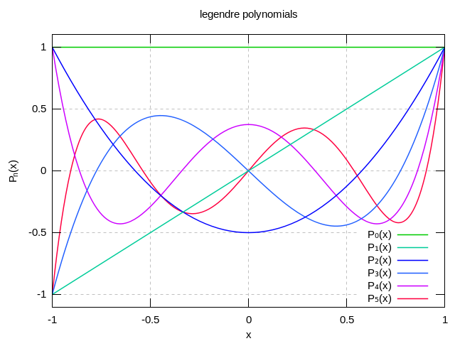

Discontinuous Galerkin Method¶
Approximating Wave Propagation¶
Motivation:
When solving a partial diferencial equation numerically, one has quite a number of difference methods of doing so. Three most widely used numerical methods are finite difference (FDM), finite volume (FVM) and finite element method (FEM). They are different techniques to discerert spatial derivatives. And combine them with an time integration method of an ordinary differential equation, we are able to advance the equation in time.
Finite difference method, though it is simple and intuitive, it has the weakness to handle local one-dimensional polynomial. Moreover, when discontinuous interal layers (e.g., discontinuous material coefficients) are involved, or complicated geometric is needed, the method becomes ill-suited. If we want to combine the geometric flexibility (finite volume) and high-order accuracy (finite element) , Discontinuous Galerkin method is one of your ideal choice.
Discontinuous Galerkin, or DG, overcomes the limitation on achieving high-order accuracy on general grids, compared with FVM. Whereas DG’s structure is quite similar to FEM, it’s mass matrix is local rather than global, thus, it is less costly to invert that. Additionally, the numerical flux is designed to reflect the underlying dynamics, one has more choices than FEM to ensure the stability for wave dominated problem.
Here, we present a 2D DG solver for a classic wave propagation problem.